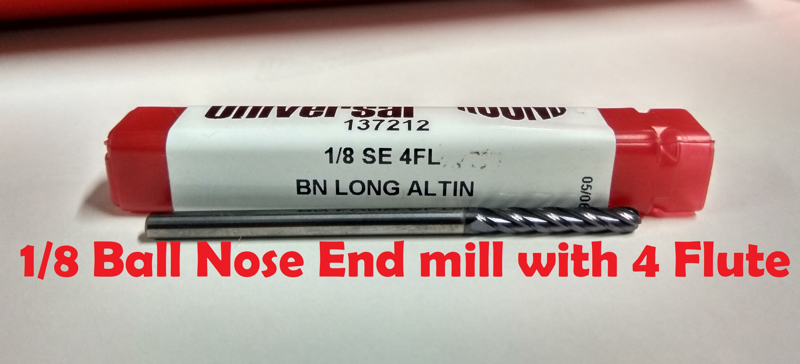
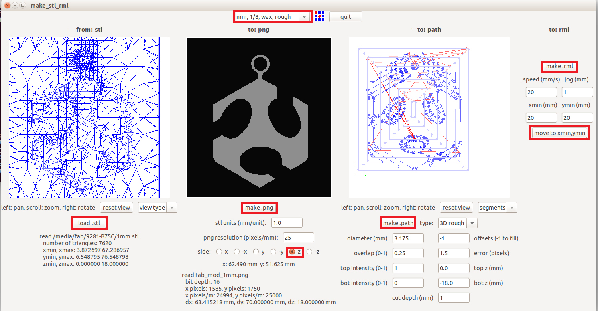
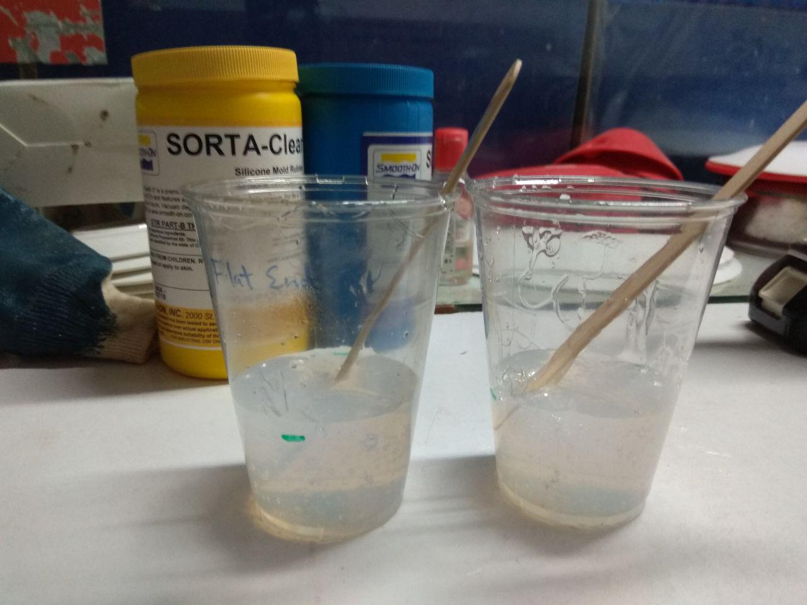
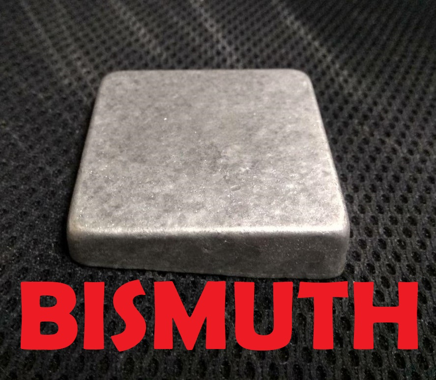

- Design a 3D mold.
- machine it, and use it to cast parts
- Review the safety data sheets for each of your molding and casting materials.
Introduction
This weeek we need to Design and build a mold also need to cast it .it's a process of manufacturing by shaping liquid or pliable raw material using a rigid frame called a mold or matrix. This itself may have been made using a pattern or model of the final object.
Casting is a manufacturing process in which a liquid material is usually poured into a mold, which contains a hollow cavity of the desired shape, and then allowed to solidify. The solidified part is also known as a casting, which is ejected or broken out of the mold to complete the process. Casting materials are usually metals or various cold setting materials that cure after mixing two or more components together; examples are epoxy, concrete, plaster and clay. Casting is most often used for making complex shapes that would be otherwise difficult or uneconomical to make by other methods
Design a 3D Mold
My Goal is make FabLab Pendent so, started Design with Rhino .
I designed a 3D of Mold and my plan to make negative mold using the Postive Mold. so Finally i will get Negative Mold and it can be used for casting Postive Molds.
i Exported Design as .stl format and i used Fab Module with Modela MDX for milling. I choosed Fab Module because it's very easy to use and simple UI. i tried with new fab tool but it's little bit difficult so i choosed old fab module.
I choosed 1/8 Ball Nose End mill with 4 Flute
I used 5x20 Wax brick for milling the mold.
secured Wax brick in Modela Sacrificial layer with using a 3M double tap insulation.

with the help of fab module i calibrated X,Y and Z axis.
There is two part in Milling a WAX ,First Rough Cut then Finish Cut, and we need to change parameter for different settings in fab module.
First i used Rough cut with 1/8 FlatEnd Bit.
we got somany waste wax while milling the mold , instructor told me to collect all with a vacum cleaner so later we can melt it to make new wax brick.
after the rough cut it's ready to Finish cut.
This is our complete Postive Mold, now we need to make a Negative Mold using this, unfortunately mold side wall is too thin so it's broken in finish cut.
Neagative Mold
So now we got the Postive Mold , next we need to make Neagtive Mold using the Positive Mold.
i just filled some water to know the volume.
So now we know the Volume of the mold.next we need to make mold, i choosed SMOOTH-ON Liquid Rubber.
SORTA-Clear™ Series rubbers are premium water white translucent silicone rubbers (platinum catalyst) which cure at room temperature with negligible shrinkage. Sorta Clear 37 has Shore 37A hardness and features high tensile and tear strength. This product also offers the convenience of a 1A:1B by volume mix ratio.it's silicones are ideal for making prototype, jewelry or other molds of any configuration where model visibility is important (i.e. extracting a model from the mold via cutting). Materials such as urethane, epoxy or polyester resins can then be cast into SORTA-Clear™ silicone without application of a release agent. Other materials such as wax and low melt metal alloys can also be cast into SORTA-Clear™. SORTA-Clear™ can be pigmented with SILC Pig™ silicone pigments.
SORTA Clear™ 37 silicone rubber is FOOD SAFE and can be used for culinary applications including casting chocolate and other confections. (source :- https://www.smooth-on.com/products/sorta-clear-37/
It's 1A:1B by volume mix ratio.so we need to take equal amount of Part A and Part B.
Take both Part A and Part B in Same Volume .
Mix Part A and Part B
Cure Time for SORTA-CLEAR 37 is 4 hrs and PotLife is 25 Min.
I waited for 5 hrs and now we got our Neagative mold.
Casting
Casting is a manufacturing process in which a liquid material is usually poured into a mold, which contains a hollow cavity of the desired shape, and then allowed to solidify. The solidified part is also known as a casting, which is ejected or broken out of the mold to complete the process. Casting materials are usually metals or various cold setting materials that cure after mixing two or more components together; examples are epoxy, concrete, plaster and clay. Casting is most often used for making complex shapes that would be otherwise difficult or uneconomical to make by other methods,
Here now have the Rubber mold and we are going to try Casting with Liquid Plastic.
in here we are using Smooth-Cast® 300 Series of liquid plastics are ultra-low viscosity casting resins that yield castings that are bright white and virtually bubble free. Vacuum degassing is not necessary. They offer the convenience of a 1A:1B by volume or 100A:90B by weight mix ratio. The differences between them are pot life and demold time. (source :- https://www.smooth-on.com/products/smooth-cast-305/
next we need to take equal amounts of Parts A and B into mixing container (100A:90B by weight) and mix thoroughly. Stir deliberately making sure that you scrape the sides and bottom of the mixing container several times.
I used a red pigments make it our cast look great.
Pour the mixture in a single spot at the lowest point of the containment field and let the mixture seek its level. This will help minimize air entrapment.
Cure Time is about 30 minutes
here i got a pink color insted of red color i also tried with other colors.
Hero shot
Problems
- while millig bit was fall and it milled all the way around , i did't tighted well so it milled some unwanted portion due to uncalibrated 'z' axis.
Experimenting with other material
After the Assignment i tried diffrent material on the same mold.
* Transparent Resin
Clear Epoxy Casting Resin can be used to mould / cast statues, cover artwork ( paintings, sculptures etc ) , souvenirs, laminate tabletops or even to encapsulate an item in a clear, glossy varnish for eternity. The resin is also used to encase electronic components e.g pc boards, LED lights etc.
Resin and Hardner have 100:60 ratio and cure time is about 5 hrs .
*Bismuth alloy (vabbit)
Bismuth has also been used in solders. The fact that bismuth and many of its alloys expand slightly when they solidify make them ideal for this purpose.it;'scompounds are used in cosmetics, medicines, and in medical procedures. As the toxicity of lead has become more apparent in recent years, alloy uses for bismuth metal as a replacement for lead have become an increasing part of bismuth's commercial importance.
Safty first because we are handling hundred degree celsius melted metal.
We are using Vulcan Muffle Furnace
Bismuth alloy (vabbit) piece was then put inside a cut and heated at 400 degrees using furnace.
After pouring to the mold.
Final Result
you can see some holes there that's due to air bubble.I used dremel to polish it.
Group Assignment
This week our Group assignment was Review the safety data sheets for each of your molding and casting materials.first i review SORTA-Clear for making rubber mold
SORTA-Clear™ Series rubbers are premium water white translucent silicone rubbers (platinum catalyst) which cure at room temperature with negligible shrinkage. Sorta Clear 37 has Shore 37A hardness and features high tensile and tear strength. This product also offers the convenience of a 1A:1B by volume mix ratio.
I'll use the Safety Data Sheet that provided by SMOOTH-ON
(source :- https://www.smooth-on.com/msds/files/BD_DS_Eco_Equ_EZB_EZS_Psy_MS_OOMOO_Reb_ST_SS_Soma_Sol_Sorta.pdf
- Hazard(s) Identification
- Composition / Information on Ingredients
- First Aid Measures
- Fire-Fighting Measures
- Handling and Storage
- Exposure Controls / Personal Protection
Not a hazardous substance or mixture according to United States Occupational Safety and Health Administration (OSHA) Hazard Communication Standard (29 CFR 1910.1200), the Canadian Workplace Hazardous Materials Information System (WHMIS) and Regulation (EC) No 1272/2008 and subsequent amendments
No ingredients are hazardous according to Regulation 2012 OSHA Hazard Communication Standard 29 CFR 1910.1200 criteria.
Inhalation: Remove source(s) of contamination and move victim to fresh air. If breathing has stopped, give artificial respiration, then oxygen if needed. Contact physician immediately.
Eye Contact: Flush eyes with plenty of water. If irritation persists, seek medical attention.
Skin Contact: In case of skin contact, wash thoroughly with soap and water.
Ingestion: Do not induce vomiting unless instructed by a physician. Never give anything by mouth to an unconscious person
Use water spray to cool fire-exposed surfaces and to protect personnel. Shut off “fuel” to fire. If a leak or spill has not ignited, use water spray to disperse the vapors. Either allow fire to burn under controlled conditions or extinguish with foam or dry chemical. Try to cover liquid spills with foam. Because fire may produce toxic thermal decomposition products, wear a self-contained breathing apparatus (SCBA) with a full face piece operated in pressure demand or positive-pressure mode.
Keep container(s) tightly closed and properly labeled. Store in cool, dry, well ventilated place away from heat, direct sunlight, strong oxidizers and any incompatibles. Store in approved containers and protect against physical damage. Keep containers securely sealed when not in use. Indoor storage should meet OSHA standards and appropriate fire codes. Containers that have been opened must be carefully resealed to prevent leakage. Empty containers retain residue and may be dangerous. Avoid water contamination.
Hand Protection: Wear any liquid-tight gloves such as butyl rubber, neoprene or PVC.
Eye Protection: Safety glasses with side shields per OSHA eye- and face-protection regulations 29 CFR 1910.133 and European Standard EN166. Contact lenses are not eye protective devices. Appropriate eye protection must be worn instead of, or in conjunction with contact lenses.
Other Protective Clothing/Equipment: Additional protective clothing or equipment is not normally required. Provide eye bath and safety shower.
Comments: Never eat, drink, or smoke in work areas. Practice good personal hygiene after using this material, especially before eating, drinking, smoking, using the toilet, or applying cosmetics. Wash thoroughly after handling.
Smooth Cast
The Smooth-Cast™ 300 Series of liquid plastics are ultra-low viscosity casting resins that yield castings that are bright white and virtually bubble free. Vacuum degassing is not necessary. They offer the convenience of a 1A:1B by volume or 100A:90B by weight mix ratio. The differences between them are pot life and demold time
TECHNICAL OVERVIEW
Inhalation: Remove source(s) of contamination and move victim to fresh air. If breathing has stopped, give artificial respiration, then oxygen if needed. Contact physician immediately.
Eye Contact: Flush eyes with plenty of water. If irritation persists, seek medical attention.
Skin Contact: In case of skin contact, wash thoroughly with soap and water.
Ingestion: Do not induce vomiting unless instructed by a physician. Never give anything by mouth to an unconscious person.
The material safety data sheet (MSDS) you find here
Smooth-Cast 300 PART A
- WARNING: IRRITANT TO EYES, SKIN & MUCOUS MEMBRANES :- Contains Methylene Diphenyl Isocyanate. Do not get in eyes, mucous membranes or on skin. Do not take internally. Do not breathe fumes. Use only with adequate ventilation. Wear chemical-resistant gloves and eye protection when using this product.
- First Aid : In case of eye contact, flush thoroughly with water for 15 minutes and get immediate medical attention. In case of skin contact, wash thoroughly with soap and water. If irritation persists, get medical attention. If swallowed, do not induce vomiting. Drink 1-2 glasses of water and get immediate medical attention. If vapors are inhaled or if breathing becomes difficult, remove person to fresh air. If symptoms persist, get medical attention
Smooth-Cast 300 PART B
- CAUTION: In case of eye contact, flush with water for 15 minutes. If irritation persists, get medical attention. For skin contact, wash with soap and water. Keep Out Of Reach Of Children.
- CAUTION: HOT! When combined, parts A & B generate heat in excess of 212°F (100°C) which could cause burns to the skin. Let cured plastic cool before handling.
Casting Resin
Epoxy Resins are thermosetting resins, which cure by internally generated heat. Epoxy systemsconsist of two parts, resin and hardener. When mixed together, the resin and hardener activate,causing a chemical reaction, which cures (hardens) the material.We are offering High Glossy , Transparent, low viscosity and UV stable liquid epoxy resin for casting, coatings, and adhesive applications. (source :- https://www.chemzest.com/high-gloss-and-transparent-epoxy-resin/
Features & Benefits:
- 100% Clear & Transparent.
- High Gloss Finishing
- Non Yellowing
- Can be Pigmented using suitable pigments
- Very less shrinkage
- Industry leading UV stability
- Excellent moisture protection barrier, stable in acidic pH solutions
- Excellent flow properties (low viscosity) with efficient substrate wetting
- Unique mechanical properties
FIRST AID MEASURES
- Skin contact : Remove contaminated clothing. Wash with soap and water and rinse with water.
- Eye contact : Promptly wash eyes with plenty of water while lifting the eye lids. Continue to rinse for at least 15 minutes. Contact physician if irritation persists.
- Inhalation : Take person out of the contaminated area. Remove patient to fresh air. Call a doctor in case of doubt or if symptoms persist.
- Ingestion : DO NOT INDUCE VOMITING! Put under medical supervision. If swallowed, seek immediate medical advice and show container or label to the doctor.
Resource
Here you can download all the design files.